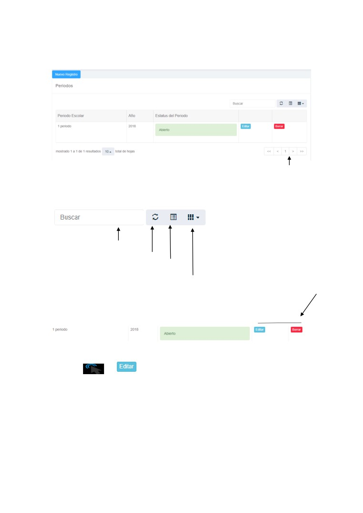
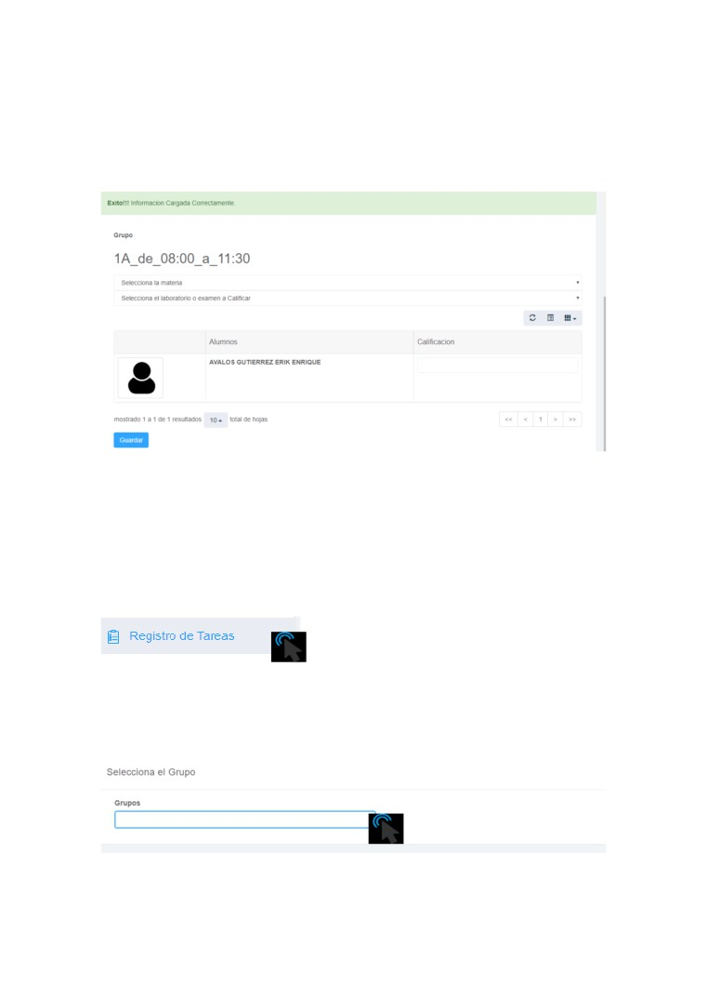
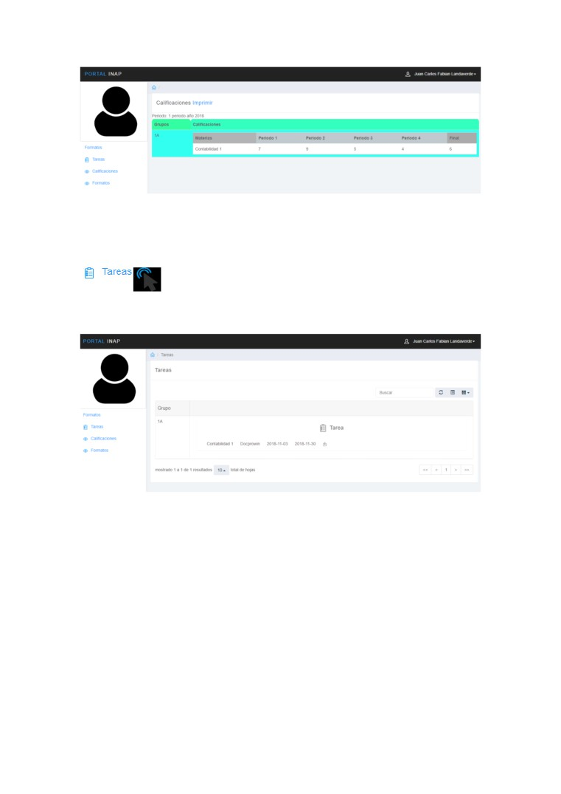

Instituto Nacional de la Palma
Manual De
Usuario
“Portal Administrativo Institucional”
Introducción
A continuación, se presenta la guía del Portal Administrativo
Institucional donde se explica todas y cada una de las funciones que
contiene el sistema, Este manual de usuario está dividido en tres
módulos donde se explica los procesos, y como funciona cada uno
de ellos.
Esta plataforma Institucional esta exclusivamente desarrollada, Para
generar procesos administrativos con un plus para el estudiante para
que este tenga acceso a un registro de notas, se recomienda que se
lea este manual antes de utilizar el Sistema, para así tener un mejor
manejo y rendimiento de todas las funcionalidades que posee este
software.
Además, cuenta con un glosario donde se explica el concepto de
cada una de las palabras que no se entiendan y que se considera
que es necesario tener el concepto claro, para así tener un mejor uso
de la aplicación.
Se recomienda que cada administrador que lo utilice este debe de
estar obligado a leer este manual, para evitar problemas en un futuro.
Manual de Usuario
Implementación del Sistema
A) Requerimientos de Hardware
Contar con:
-Computadora de escritorio
-Memoria RAM mínimo de (4)
-Procesador Intel Core i3 (como mínimo)
- Conexión a Internet (Cableada)
-Disco duro solido (debido a la cantidad de procesos)
B) Requerimientos de Software
Contar con:
-Sistema Operativo Windows
-Navegador (Chrome, Firefox)
-Contar con un domino institucional
-Ccleaner Monitoring para eliminar cache residuales
Manual de Usuario
Accesibilidad al sistema
Una vez el sistema ya esté en un dominio propio institucional
accedemos a la nube desde nuestro navegador predeterminado y
tecleamos como por ejemplo la siguiente ruta detallada:
http:// Dominio de la Institución/portal_inap.com
Interfaz principal
Esta es la interfaz principal del usuario relacionada con tres factores
muy fundamentales primordiales como simplicidad, experiencia y
detalle.
Manual de Usuario
Módulos
Este sistema está consolidado con una de las opciones modernas y
accesible para el sistema educativo permitiendo una facilidad para el
manejo de la información permitiendo mayor capacidad de
almacenamiento de información y seguridad de los datos.
En la esquina superior derecha se referencia los módulos del sistema
que son:
Modulo Administrador:
Este módulo permite configurar el ambiente del sistema, así como
parametrizar las diferentes variables que se ocuparan en los
siguientes módulos como, por ejemplo:
Tiene acceso a configurar el sistema y a realizar registros de periodos
escolares, alumnos, profesores, grupos, materias, archivos, formatos
y a generar respaldo de la base de datos.
Modulo Profesor:
Este módulo está desarrollado exclusivamente para los docentes de
la institución ya que estos podrán generar registros de calificaciones
y asignarles tareas a sus estudiantes virtualmente.
Modulo Alumno:
Este permite la administración y gestión de notas de los estudiantes
y tareas asignadas.
Manual de Usuario
Acceso al sistema
El proceso de autenticación para el módulo Admin por defecto es
establecido con las siguientes especificaciones:
Usuario:
Admin
Contraseña: Admin
Interfaz principal del módulo Administrador
Manual de Usuario
Esta interfaz le provee al administrador un menú vertical y una
opción de búsqueda para buscar algo relacionado a la funcionalidad
del sistema.
También nos brinda un manual general de procesos en el cual nos
ubicamos aquí y cliqueamos.
Manual de Usuario
Nos re direccionara a lo siguiente:
Siempre en la interfaz principal del módulo administrador vemos
esto en el cual se nos detalla la cantidad de Alumnos, profesores
hay registrados en el sistema y las bajas que se ha dado ya sea de
estudiantes o profesores.
En la esquina superior izquierda se nos detalla lo siguiente esta es
la opción para poder cerrar sesión.
Manual de Usuario
Funcionalidad del módulo Admin
Comenzamos ingresando al menú el periodo escolar de lado
izquierdo y agregar un periodo escolar colocando un rango de meses
y año actual.
Paso 1
Nos ubicamos en el menú y accedamos aquí:
Nos saldrá lo siguiente y nos ubicamos aquí:
Agregamos un nuevo Periodo llenando los campos que nos pide el
formulario luego guardamos.
Manual de Usuario

Una vez realizado el registro de un Periodo escolar corroboraremos
si este se guardó de manera satisfactoria de la siguiente manera:
Esta es la vista de paginación detallada cuando se almacenan los
registros
Que nos muestra 4 opciones que son:
Buscar registros
Refrescar
Opciones de vista
Vista de Columnas
Los registros cuentan con 2 botones de mantenimiento que son:
Al hacer
en
se nos mostrara lo siguiente por si se requiere
modificar o actualizar el registro deseado.
Manual de Usuario
Al hacer
en
se nos mostrara la siguiente alerta en la cual
podremos confirmar la operación.
También este cuenta con paginación para mostrar en cuanto en
cuanto deseas obtener los registros:
Paso 2
Agregamos profesores ubicándonos en el menú vertical aquí:
Se nos muestra lo siguiente con ningún registro, agregaremos un
nuevo registro ubicándonos aquí.
Manual de Usuario
Accediendo a este formulario en el cual introduciremos los datos e
información del Profesor y guardamos.
Una vez guardado el registro este se nos almacenara de la
siguiente manera, mostrándonos opciones de mantenimiento y de
vista como se detalló anteriormente:
Paso 3
Se procede a registrar las materias y nos ubicamos en el menú
vertical en la siguiente opción:
Manual de Usuario
Se nos muestra lo siguiente en el cual nos ubicamos en nuevo
registro:
Introducimos el nombre de la materia a registrar y guardamos.
Esta se nos almacenara de la siguiente manera.
Manual de Usuario
Paso 4
Se tienen que determinar grupos nos ubicamos en la opción del
menú vertical a aquí.
Nos abrirá lo siguiente y nos ubicamos en:
Ingresamos la información del grupo y guardamos.
Manual de Usuario
¡Ya! Cuando hayas registrado un grupo y este, ya fue almacenado
correctamente nos ubicamos aquí para poder asignarle materias al
grupo, como lo muestra la imagen de referencia:
Aquí asignamos la materia y el profesor a impartirla y guardamos.
Ya establecido lo anterior se nos mostrara esto en lo cual
confirmamos:
Manual de Usuario
Una vez aceptado nos ubicamos en el menú
aquí
corroboraremos los registros anteriores del proceso de asignación
de grupo y materias almacenados de esta manera con sus
respectivos mantenimientos y vistas.
Paso 5
Una vez que el sistema cuente con grupos y materias se debe a
proceder a añadir alumnos en el menú
Luego nos ubicamos aquí:
Manual de Usuario
Aquí ingresamos todas las credenciales del Alumno e información
relevante en el formulario con campos validados y guardamos.
Manual de Usuario
Ya cuando se ha generado el registro de un alumno este como por
ejemplo se reflejará de la siguiente manera con sus respectivos
mantenimientos:
Luego procedemos a añadir al estudiante a un grupo en el cual nos
colocamos en esta columna de la derecha y accedemos aquí:
Manual de Usuario
Se mostrará lo siguiente en el cual ya captura datos del alumno y se
procede a llenar los respectivos cambios y guardar.
Una vez añadido el estudiante a un grupo y periodo escolar nos
ubicamos en el menú
nos ubicamos aquí y desplegamos.
Manual de Usuario
Se nos mostrara lo siguiente dependiendo los periodos que
tengamos registrados para poder obtener la asistencia de los
estudiantes en el transcurso de los días del periodo escolar.
Esto nos generara el siguiente reporte de todos los alumnos el cual
podemos imprimirlo:
Generar Calificaciones
Este módulo Administrador también permite generar calificaciones a
los alumnos de la siguiente manera.
Nos ubicamos en el menú vertical en la opción:
Manual de Usuario
Aquí se nos mostrara lo siguiente en el cual seleccionaremos un
periodo escolar y damos clic en mostrar Alumnos:
Se nos cargara abajo del mismo contenido el listado de alumnos
que estén registrados en el grupo, seleccionamos la materia y el
laboratorio o examen que se va a calificar y guardar cada vez que
se genere una calificación.
Manual de Usuario
Este módulo cuenta con esta opción del menú llamada:
Aquí se presenta lo siguiente:
Aquí se pueden generar credenciales y constancias de la siguiente
manera.
Para generar una credencial seleccionamos un periodo y un grupo
como, por ejemplo.
Manual de Usuario
Una vez generado lo anterior se nos muestra el siguiente reporte:
Para generar una constancia seleccionamos un periodo e
ingresamos el carnet del alumno como, por ejemplo.
Una vez generado se nos muestra el siguiente reporte:
Manual de Usuario
Si queremos ver el historial de los alumnos asignados a un grupo nos
ubicamos en la opción del menú llamada alumnos y cliqueamos la
foto del alumno y se nos generara lo siguiente:
Cliqueamos y se nos genera lo siguiente:
Este módulo cuenta con esta última opción del menú llamada:
Aquí podremos generar respaldos de la base de datos del sistema
para evitar perdida de registros e información del sistema.
Manual de Usuario
Descripción:
Una base de datos es un conjunto de datos almacenados para un uso posterior.
En el servidor aquí se establecerá el programa que provee al sistema servicios
de base de datos definido por el modelo cliente-servidor como por ejemplo
phpmyadmin que es localhost más utilizado ya que es un ordenador o
dispositivo local que tiene utilidades muy interesantes para desarrolladores esto
dependerá del servidor de base de datos con la que cuente la institución
Especificamos el usuario por lo general si se está utilizando un localhost este
por defecto suele ser root.
Aquí especificamos la contraseña con la que entramos a nuestro servidor de
base de datos.
Una vez especificado el servidor, usuario y contraseña aquí colocamos el
nombre de la base de datos, que es llamada tal y como se muestra a
continuación.
Generamos el respaldo y este se descargará como un archivo con formato sql
que es para importar o exportar la estructuración de una base de datos.
Manual de Usuario
Este archivo sql se almacenará en la carpeta de descargas de su computadora,
se recomienda crear un directorio en su escritorio para ir alojando estos
respaldos de la base de datos para evitar inconvenientes a la hora de importarla
de nuevo en caso surja un inconveniente.
Funcionalidad del módulo profesor
Este módulo está desarrollado exclusivamente para los docentes de
la institución ya que aquí podrán generar registros de calificaciones y
asignarles tareas a sus estudiantes virtualmente.
Login de acceso
Una vez el administrador del sistema ha ya asignado al profesor un grupo este
tendrá acceso a la interfaz principal como se muestra a continuación:
Manual de Usuario

Aquí el docente tendrá acceso a registrar calificaciones y asignar tareas a sus
grupos asignados
Seleccionamos el periodo y clic en mostrar alumnos a aquí se nos detallara lo
siguiente donde procederemos a generar las respectivas calificaciones de los
alumnos que están en el grupo.
Nota
Seleccionamos la materia asignada y seleccionamos el laboratorio o examen el
cual se va a calificar siempre guardando cada vez que se genere una calificación.
Para asignar tareas al grupo nos ubicamos en esta opción del menú
Se nos mostrara lo siguiente aquí seleccionamos un grupo:
Manual de Usuario
Ya seleccionado el grupo se nos muestra lo siguiente en el cual procedemos a
llenar los respectivos campos para especificar la tarea y guardamos.
Una vez especificada la tarea corroboramos en la parte superior derecha si la
tarea se asignó correctamente generándose de la siguiente manera:
Este cuenta con 2 opciones de descargar y eliminar
Manual de Usuario
Funcionalidad del módulo Alumno
Este permite la administración y gestión de notas de los estudiantes
y tareas asignadas.
Login de acceso
Nota
El estudiante accederá al portal ingresando con su carnet estudiantil.
Una vez ingresado el alumno accederá a su interfaz principal que es
esta.
Nota
Aquí se le mostrará las notas asignadas por su profesor o
administrador del sistema, las notas al alumno se les añadirá por
notas globales por cada periodo mostrándosele al estudiante su
reporte de notas de la siguiente manera como lo muestra la imagen
a continuación, ejecutando el sistema el respectivo cálculo de los 4
periodos equivalentes a 2.5 cada periodo dividido entre
4 para
procesar la nota final del alumno.
Manual de Usuario

En la esquina superior izquierda el alumno tiene la opción de ver si el
profesor de su materia asignada le ha asignado una tarea a su grupo
de clases ubicándonos aquí:
Se muestra la tarea asignada con fecha de inicio y fecha de entrega
con la opción de descargar la tarea.
Si se requiere de resolver alguna duda de carácter técnico, podrá comunicarse a los
siguientes correos donde se podrá brindar soporte y solucionar cualquier duda en cuanto
al sistema:
jc_landaverde_@hotmail.com
Si tiene una duda de carácter laboral podrá ponerse en contacto con el responsable
funcional del sistema, en este caso el administrador del sistema.
Manual de Usuario